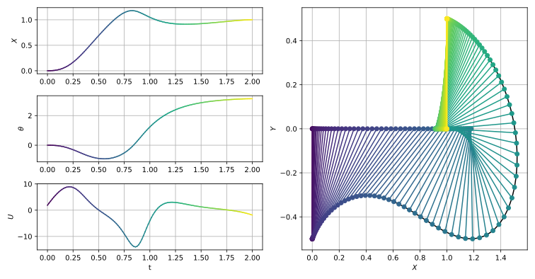
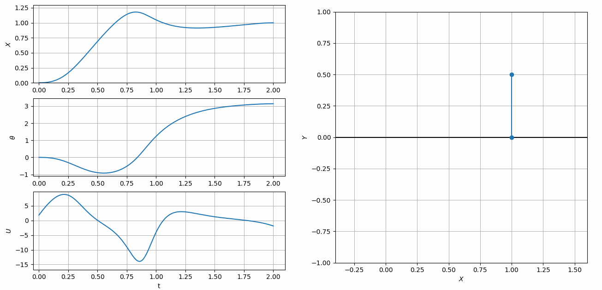

Cart-Pole Swing Up¶
In this example, derived from Kelly’s excellent intro to collocation methods [1], we will compute the minimum effort trajectory to swing a cart-pole system to a vertical orientation. The cart with mass, \(m_1\), is free to move along a horizontal track in the \(x\) direction subject to an applied force, \(F\). The angular position, \(\theta\), of the attached pole with length, \(l\), and mass, \(m_2\), is measured from the \(-y\) direction. The dynamics of the combined cart-pole system can be represented as a system of first order ODE’s as shown below.
The matrix, \(\textbf{M}\), and vector, \(\vec{Q}\), necessary for computing the second time derivatives of \(x\) and \(\theta\), can be found by straightforward application of Newtonian or Lagrangian mechanics. Since \(\textbf{M}\) is a 2 by 2 matrix it is easy to derive an explicit formula for \(\ddot{x}\) and \(\ddot{\theta}\) [1]. However, in this example, we leave the dynamics in implicit matrix form in order to demonstrate ASSET’s differentiable matrix inverse expressions.
The cart/pole masses, boundary conditions, and path constraints used by Kelly [1] are shown below.
The minimum effort trajectory is obtained by minimizing the integral of the square of the force applied to the cart.
The cart-pole dynamics can be implemented as an ASSET ODE as shown below. Here we use ASSET’s matrix functions to construct a row-major view of the coefficients of \(\textbf{M}\). We can then invert this expression and multiply by \(\vec{Q}\), to define \(\ddot{x}\) and \(\ddot{\theta}\).
class CartPole(oc.ODEBase):
def __init__(self,l,m1,m2,g):
Xvars = 4
Uvars = 1
####################################################
XtU = oc.ODEArguments(Xvars,Uvars)
x,theta,xdot,thetadot = XtU.XVec().tolist()
F = XtU.UVar(0)
Q = vf.stack([-g*vf.sin(theta),
F+m2*l*vf.sin(theta)*thetadot**2])
Mvec_rm = vf.stack(vf.cos(theta),l,
m1+m2,m2*l*vf.cos(theta))
M = vf.RowMatrix(Mvec_rm,2,2)
xddot_thetaddot = M.inverse()*Q
ode = vf.stack([xdot,thetadot,xddot_thetaddot])
####################################################
super().__init__(ode,Xvars,Uvars)
After implementing the ODE, we define a phase and apply our boundary conditions and integral objective function. The units and time scale of this problem are already well conditioned and do not need any non-dimensionalization. Furthermore, it is sufficient to initialize the trajectory with a straight line initial guess between the fixed boundary conditions.
m1 = 1 # Mass of Cart kg
m2 =.3 # Mass of Pole kg
l =.5 # Length of Pole m
g = 9.81 # you already know m/s^2
Fmax = 20 # N
xmax = 2 # m
tf = 2 # s
xf = 1 # m
ts = np.linspace(0,tf,100)
IG = [[xf*t/tf,np.pi*t/tf,0,0,t,.00] for t in ts]
ode = CartPole(l,m1,m2,g)
phase = ode.phase("LGL5",IG,64)
#Fix first state (x,theta,xdot,thetadot) and time
phase.addBoundaryValue("First",range(0,5),[0 ,0 , 0, 0, 0])
#Fix last state (x,theta,xdot,thetadot) and time
phase.addBoundaryValue("Last" ,range(0,5),[xf,np.pi, 0, 0, tf])
# Bound control forces
phase.addLUVarBound("Path",5,-Fmax,Fmax)
phase.addLUVarBound("Path",0,-xmax,xmax)
# Minimize the "control effort", the integral of square of applied force
phase.addIntegralObjective(Args(1)[0]**2,[5])
phase.setThreads(8,8)
phase.optimizer.set_PrintLevel(1)
phase.optimize()
Traj = phase.returnTraj()
On a 6 core i7-9750H laptop, with 64 LGL5 segments, this problem converges in 12 iterations of the optimize algorithm taking only 28 milliseconds. The final objective value is 58.80819. A plot and animation of the converged trajectory can be seen below.




References¶
Kelly, M., 2017. An introduction to trajectory optimization: How to do your own direct collocation. SIAM Review, 59(4), pp.849-904.
Full Code¶
The complete Python implementation is included below.
1import numpy as np
2import asset_asrl as ast
3import matplotlib.pyplot as plt
4import seaborn as sns # pip install seaborn if you dont have it
5import matplotlib.animation as animation
6
7
8
9vf = ast.VectorFunctions
10oc = ast.OptimalControl
11Args = vf.Arguments
12
13'''
14Example taken from
15Kelly, M., 2017. An introduction to trajectory optimization: How to do your own direct collocation. SIAM Review, 59(4), pp.849-904.
16
17Compute the minimum effort trajectory to swing a cart pole system to vertical.
18The boundary conditions, dynamics and objective are the same as in the reference,
19but we use asset's matrix functions to invert the mass matrix at run-time rather than solving
20for the equations of motion explicitly.
21
22'''
23
24class CartPole(oc.ODEBase):
25
26 def __init__(self,l,m1,m2,g):
27 Xvars = 4
28 Uvars = 1
29 ####################################################
30 XtU = oc.ODEArguments(Xvars,Uvars)
31
32 x,theta,xdot,thetadot = XtU.XVec().tolist()
33 F = XtU.UVar(0)
34
35 Q = vf.stack([-g*vf.sin(theta),
36 F+m2*l*vf.sin(theta)*thetadot**2])
37
38 Mvec_rm = vf.stack(vf.cos(theta),l,
39 m1+m2,m2*l*vf.cos(theta))
40
41 M = vf.RowMatrix(Mvec_rm,2,2)
42
43 xddot_thetaddot = M.inverse()*Q
44
45 ode = vf.stack([xdot,thetadot,xddot_thetaddot])
46 ####################################################
47 super().__init__(ode,Xvars,Uvars)
48
49###############################################################################
50
51def Plot(Traj):
52
53 T = np.array(Traj).T
54
55
56 P0X = T[0]
57 P0Y = np.zeros_like(T[0])
58 P1X = T[0] + l*np.sin(T[1])
59 P1Y = -l*np.cos(T[1])
60
61 n = len(P0X)
62
63 cols=sns.color_palette("viridis",n)
64
65 fig = plt.figure()
66 ax0 = plt.subplot(321)
67 ax1 = plt.subplot(323)
68 ax2 = plt.subplot(325)
69 ax3 = plt.subplot(122)
70
71 axs = [ax0,ax1,ax2]
72
73 for i, var in enumerate([0,1,5]):
74 for j in range(0,len(T[0])-1):
75 axs[i].plot(T[4][j:j+2],T[var][j:j+2],color=cols[j])
76
77
78
79 ax3.plot(P0X,P0Y,color='k')
80 ax3.plot(P1X,P1Y,color='k')
81
82 for i in range(0,n):
83 xs = [P0X[i],P1X[i]]
84 ys = [P0Y[i],P1Y[i]]
85 ax3.plot(xs,ys,color=cols[i],marker='o')
86
87 ax0.grid(True)
88 ax1.grid(True)
89 ax2.grid(True)
90 ax3.grid(True)
91
92 ax0.set_ylabel(r'$X$')
93 ax1.set_ylabel(r'$\theta$')
94 ax2.set_ylabel(r'$U$')
95 ax2.set_xlabel(r't')
96
97 ax3.set_xlabel(r'$X$')
98 ax3.set_ylabel(r'$Y$')
99 fig.set_size_inches(10.5, 5.5, forward=True)
100
101 fig.set_tight_layout(True)
102 plt.show()
103
104def Animate(Traj):
105 T = np.array(Traj).T
106
107
108 P0X = T[0]
109 P0Y = np.zeros_like(T[0])
110 P1X = T[0] + l*np.sin(T[1])
111 P1Y = -l*np.cos(T[1])
112
113 n = len(P0X)
114 fig = plt.figure()
115
116 ax0 = plt.subplot(321,xlim=(-.05, max(T[4])*1.05), ylim=(min(T[0])*1.2, max(T[0])*1.1))
117 ax1 = plt.subplot(323,xlim=(-.05, max(T[4])*1.05), ylim=(min(T[1])*1.2, max(T[1])*1.1))
118 ax2 = plt.subplot(325,xlim=(-.05, max(T[4])*1.05), ylim=(min(T[5])*1.2, max(T[5])*1.1))
119 ax3 = fig.add_subplot(122, aspect='equal',xlim=(-.4, 1.6), ylim=(-1.0, 1.0))
120
121 ax3.grid(True)
122
123 ax3.plot([-2,2],[0,0],color='k')
124
125 pole, = ax3.plot([],[],marker="o")
126 X, =ax0.plot([],[])
127 theta, =ax1.plot([],[])
128 U, =ax2.plot([],[])
129
130 def init():
131 pole.set_data([],[])
132 U.set_data([],[])
133 X.set_data([],[])
134 theta.set_data([],[])
135 return pole,X,theta,U
136
137 def animate(i):
138 xs = [P0X[i],P1X[i]]
139 ys = [P0Y[i],P1Y[i]]
140 pole.set_data(xs,ys)
141 X.set_data(T[4][0:i+1],T[0][0:i+1])
142 theta.set_data(T[4][0:i+1],T[1][0:i+1])
143 U.set_data(T[4][0:i+1],T[5][0:i+1])
144
145 return pole,X,theta,U
146
147 ani = animation.FuncAnimation(fig, animate, frames=len(P0X),
148 interval=60, blit=True, init_func=init,
149 repeat_delay=5000)
150
151
152
153 ax0.grid(True)
154 ax1.grid(True)
155 ax2.grid(True)
156 ax3.grid(True)
157
158 ax0.set_ylabel(r'$X$')
159 ax1.set_ylabel(r'$\theta$')
160 ax2.set_ylabel(r'$U$')
161 ax2.set_xlabel(r't')
162 ax3.set_xlabel(r'$X$')
163 ax3.set_ylabel(r'$Y$')
164 fig.set_size_inches(15.5, 7.5, forward=True)
165
166 plt.show()
167
168
169
170##############################################################################
171
172if __name__ == "__main__":
173
174 m1 = 1 # Mass of Cart kg
175 m2 =.3 # Mass of Pole kg
176 l =.5 # Length of Pole m
177 g = 9.81 # gravity m/s^2
178
179 Fmax = 20 # N
180 xmax = 2 # m
181
182 tf = 2 # s
183 xf = 1 # m
184
185 ts = np.linspace(0,tf,100)
186 IG = [[xf*t/tf,np.pi*t/tf,0,0,t,.00] for t in ts]
187
188
189 ode = CartPole(l,m1,m2,g)
190
191 phase = ode.phase("LGL5",IG,64)
192 #Fix first state (x,theta,xdot,thetadot) and time
193 phase.addBoundaryValue("First",range(0,5),[0 ,0 , 0, 0, 0])
194 #Fix last state (x,theta,xdot,thetadot) and time
195 phase.addBoundaryValue("Last" ,range(0,5),[xf,np.pi, 0, 0, tf])
196 # Bound control forces
197 phase.addLUVarBound("Path",5,-Fmax,Fmax)
198 phase.addLUVarBound("Path",0,-xmax,xmax)
199 # Minimize the "control effort", the integral of square of applied force
200 phase.addIntegralObjective(Args(1)[0]**2,[5])
201
202 phase.setThreads(8,8)
203 phase.optimizer.set_PrintLevel(1)
204 phase.optimize()
205
206 Traj = phase.returnTraj()
207
208
209 ## Example of how to get exact timing statistics should you need to
210 print("Total Time (Sum of all below) :",phase.optimizer.LastTotalTime," s")
211 print("Function/Derivative Eval Time :",phase.optimizer.LastFuncTime," s")
212 print("KKT Matrix Factor/Solve Time :",phase.optimizer.LastKKTTime," s")
213 print("KKT Matrix Pre-Analysis/Mem Alloc Time :",phase.optimizer.LastPreTime," s")
214 print("Miscellaneous (Mostly Console Print) Time :",phase.optimizer.LastMiscTime," s")
215
216
217
218 Plot(Traj)
219 Animate(Traj)
220
221 ###########################################################################
222
223